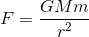

Orbit Simulator
Code for this simulator can be found here. Requires tkinter and matplotlib.
In the late 17th century, Isaac Newton published work outlining the nature of a force that causes all of the objects in the universe to attract each other. Today, we call this force gravity. The gravitational force between any two objects in the universe is given by
where F is the force, G is the gravitational constant, M and m are the masses of the objects, and r is their distance. This is an example of an inverse-square law, a mathematical relation that commonly
appears in physics. If the distance between the objects is doubled, the force is reduced by a factor of four (four being the square of two).
As it turns out, a force following an inverse-square law tends to make
particles feeling the force move in repetitive ways or paths.
For gravity, we call these paths orbits. In the simulation above, we have three celestial bodies interacting gravitationally. The blue planet and the green planet both move in predictable paths that are more
or less circular.
The grey moon, though, moves around wildly, even when left to its own devices. It swings around the two planets unpredictably, sometimes even changing its mind about which of the two it wants
to orbit around.
Why?
The Three Body Problem
As it turns out, the paths on which objects move are only predictable if there are two bodies present that are interacting gravitationally. This scenario is called the "two body" problem, and analytical solutions
for it exist. That is, it is possible to obtain the positions of both bodies as explicit functions of time, given that we know the forces acting on them.
However, if we add a third body to the problem, the situation becomes far more complicated. This is called the three body problem, and the equations have so many terms that no analytical solutions exist. This means the
bodies move in chaotic ways, which can change vastly if the initial state of the system is changed even slightly.
In the simulation shown, the mass of the moon is so small that the gravitational force it exerts
on the two planets is barely felt by them. Therefore the planets move as if they only had one body affecting them - the other planet. They move in predictable ways. However, the moon feels the force of both massive planets,
and it thus tends to move chaotically.
The semi-implicit Euler's method
Due to the fact that the objects move unpredictably, we cannot chart their positions as explicit functions of time. Instead, we try to simulate what would actually happen if the objects were in the real world.
This can be broken down into a number of steps, if we know an object's position and velocity at time t:
1. Look at the forces acting on each body at a time t.
2. Calculate the acceleration of each body according to the forces acting on it (using Newton's 2nd Law, F = ma).
3. Given the acceleration, calculate the object's velocity at a future time t + Δt (where Δt is small).
4. Given the velocity, calculate the object's position at t + Δt.
5. Now we know the position and velocity at t + Δt. Repeat from step 1 until the desired time is reached.
This set of steps is a special case of Euler's method, a method of solving ordinary differential equations. We can sum up the steps in the following equations:
where x(t) and v(t) are the position and velocity at time t, a is the acceleration, t is the current time, and Δt is the difference between the current time and future time.
This method is a decent way of determining the positions at a given time, but unfortunately it is not very good for simulating processes that may take a long time.
Every time we make a "step" from t to t + Δt, there is a certain amount of error associated with the new position and velocity, because we approximate the acceleration as constant in the equations above.
With Euler's method, this error tends to make the energy of the system grow with time. If left unchecked, the planets would fly apart!
Luckily, there is a small modification that we can make to the set of equations above to resolve this issue. If we use the velocity at t + Δt to calculate the position at t + Δt, the energy does not tend
to grow.
This method is called the semi-implicit Euler's method. It is used in this simulator, and, assuming the timestep is small enough, the paths of the planets remain stable for many orbits.